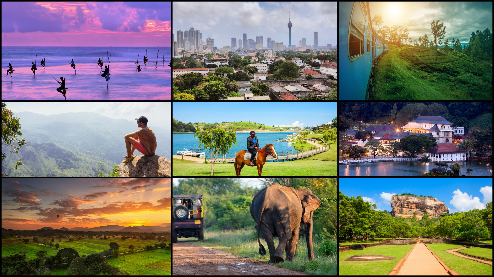

The Pearl of the Indian Ocean
Welcome to TravelSL, home to a unique digital collection highlighting the essence of Sri Lankan history, showcasing historical landmarks, cultural heritage sites, and breathtaking natural wonders. Our gallery captures everything from the early days to modern attractions, continually presenting insights that hold significant historical and cultural value.
This platform was developed in 2026 as a personal academic project during undergraduate studies, incorporating guidance from instructors and inspiration from open-source web technologies. What started as a simple test bed has blossomed into an extensive travel guide and interactive destination gallery.
Over the months, we have curated high-quality content and dynamic search features for individual research and non-commercial educational use. .1While progress is continuously expanding, we aim to deliver an interface optimized for everyone looking to explore the beautiful island of Sri Lanka.
Key Highlights of the Platform:
- 🔹 Comprehensive Travel Guides: Detailed info about historical and natural hotspots.
- 🔹 Interactive Client-Side Search: Find destinations instantly without page reloads.
- 🔹 Responsive Interface: Smooth and optimized user experience across mobile and desktop devices.